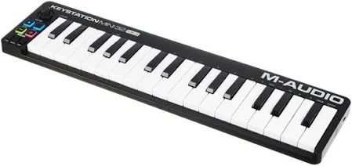

MIDI (MIDI) Module
The MIDI module is a special type of input module that takes a signal from a MIDI controller device (such as electronic piano/keyboard shown below, or pads etc) and converts it to a frequency/constant that can be used by other modules, like oscillators. To learn more about midi devices, click
here.
For example, if you press a c note on a MIDI keyboard, the MIDI module takes this signal and converts it to a frequency of 261.63Hz which can then be used by an oscillator (like sine) to produce sound of this frequency.
There is a maximum of 1 MIDI input node per project.

This module takes 0 inputs and produces 1 output:
Output is the constant (frequency) channel output of the given key/note pressed by the MIDI supported device.